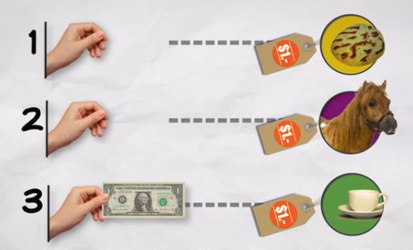
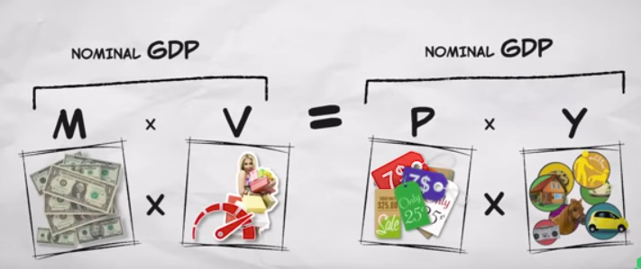
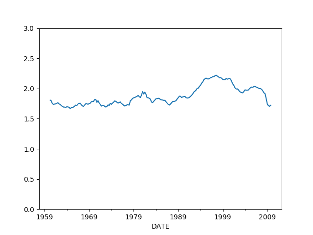
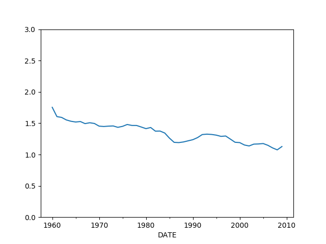

Paranın Miktar Teorisi (Quantity Theory of Money)
Bir liranın günlük hayat içinde dolaşımını düşünelim. Ben gidiyorum mesela köşe başındaki satıcıdan bir poğaça alıyorum. Bu satıcı lirayı kızına veriyor, kızı da onu lunaparkta ata binmek için kullanıyor. Atı kiralayan Ali lirayı eve götürüyor, bir süre koltuk altında kaybediyor, tekrar buluyor, sonra onu kahve almak için kullanıyor. Bütün bir sene içinde bu lira üç kere harcanmış oluyor.

PMT'yi anlamak için bu kavramlar yeterli aslında. 1 lira para, $M$ ile gösteriyoruz, o paranın bir senede kaç kere kullanıldığı para hızı, onu $V$ ile gösteriyoruz ki üstteki örnekte $V=3$. Poğaça, ata binmek, kahve ekonomideki gerçek ürünler ve servisler, onlara $Y$ diyelim, ve ürün / servislerin fiyatı ise $P$ oluyor. PMT için gerekli değişkenler bunlar.
Tüm ekonomi bazında düşünürsek, $M$ para arzı (money supply) yani ekonomideki tüm para miktarı. $V$ ürün ve servis almak için bir liranın kaç kez kullanıldığı; bazıları parayı yastığın altına koyar onların parası "yavaştır", kimisi habire alışveriştedir, onların parası hızlıdır. Hız tüm paraların hız averajı üzerinden hesaplanıyor tabii. $P$ tüm ürün ve servislerin (yine ortalama) fiyat seviyesi. Son olarak $Y$, ekonomide satılan tüm ürün ve servislerin miktarı, yani Gayrisafi Yurtiçi Hasıla, GSYH (İngilizce GDP). Onun fiyat seviyesi ile çarpılmış hali Reel GSYH (Nominal GDP), bu ekonominin ürettiği ürünlerin tüm lira bazında toplamı. Formülün bir tarafı bu.
Formülün diğer tarafı $M$ çarpı $V$; ekonomideki tüm para miktarını o paranın ekonomi içinde senede kaç kez döndüğü ile çarparsak bu bize, aynı şekilde, reel GSYH'yı vermez mi? Para senede kaç kez bir ürün için birisine verilmiş ise, bu ekonomide o kadar satış yapılmış demektir. Böylece formülün iki tarafını elde etmiş olduk.

Bu formüle bir teori bile denemez, gayet bariz bir eşitlik (identity). Formüle bir diğer bakış açısı şöyle, eldeki tüm para çarpı o paranın kaç kez harcandığı ekonomideki tüm alıcıların yaptıklarını kapsar, satılan her şey çarpı o şeylerin fiyatı ekonomideki tüm satıcıların yaptıklarını kapsar. Satılan her şey tanım itibariyle alınmış olduğuna göre
$$ M \cdot V = P \cdot Y \qquad (1)$$
doğru olmalıdır. Tabii üstteki formüldeki değişkenlerin nasıl ölçülmesi gerektiğiyle ilgili tartışmalar var, burada farklı yaklaşımlar olabilir. Mesela kredi kartları para olarak $M$ içinde sayılsın mı sayılmasın mı?
Bu tür farklılıklar bir tarafa, üstteki formül bir eşitlik olarak, ekonomi hakkındaki fikirlerimizi organize etmesi açısından çok faydalı. Mesela enflasyon ($P$'nin yükselmesi) sebebi nedir sorusunu formül üzerinden cevaplayabiliriz.
Enflasyon
PMT formülünde iki tarafı $M$'ye bölelim,
$$ \frac{MV}{Y} = P$$
Bu denklem bize diyor ki eğer fiyatlar değişiyorsa bunun üç farklı sebebi olabilir. $M$ değişiyor, $V$ değişiyor, ya da $Y$ değişiyor. Unutmayalım fiyatlar yani $P$ (efendim domates ne kadar, pantolon, manto, ekmek fiyatları vs) kısa sürede oldukca hızlı değisebilir, mesela bir sene içinde fiyatların ikiye, üçe katlandığı görülmüştür. Fakat genel ekonomik açısından biz biliyoruz ki $V,Y$ oldukca sabittir. $Y$, yani GSYH, bir sene içinde çok, çok fazla değişmez. Bir sene içinde yüzde 10'lük çıkış muazzam bir büyüme kabul edilir, nadir meydana gelir, ama ikiye, üçe katlanma neredeyse hiç olmaz. Fiyatlardaki aşırı değişimi ekonomideki aşırı büyüme ile açıklayamayız [2].
Peki paranın dolanım hızı $V$? Bu değişken 1 liranın bir sene içinde ekonomide ortalama kaç alım yaptığını gösterir, ABD ekonomisinde bu sayı aşağı yukarı 7 seviyesindedir. Hızı belirleyen maaşların ne sıklıkla ödendiği, haftalık mı, aylık mı mesela, ya da bir borç senetinin, çekin tahsil edilmesinin ne kadar zaman aldığı (ülkenin banka yapısı, bürokrasisi ile alakalı) gibi faktörlerdir. Bunlar da yavaş değisen faktörler, bu sebeple hız $V$ artabilir, ya da azalabilir, ama bu ABD örneğinde 8 seviyesine çıkış ya da 6 seviyesine iniş ölçüsünde olur. O zaman $P$'deki çok büyük değişimi $V$ ile de açıklayamayız.
Geriye ne kaldı? $M$ kaldı. Yani fiyatlardaki çıkış para arzındaki çıkışla alakalıdır. Eğer bir ekonomide aynı miktardaki ürün ve servisin peşinde olan para seviyesi artarsa, fiyatların yukarı çıkması gerekir. Herkesin cebinde 100 lira olabilir, ve kahve 1 lira, sinema fiyatı 3 lira olabilir, ama herkesin cebindeki para ikiye katlansa, ama daha fazla kahve daha fazla sinema salonu açılmasa, kahve 2 lira, sinema 6 lira olacaktır.
Devletler Niye Enflasyon Yaratır
Enflasyon para arzının artmasıyla ortaya çıkar, ve aslında bir tür vergidir, çünkü zenginliği bir anlamda halktan devlete aktarır çünkü devlet para basıp bu parayı, yeni arzı piyasada mal almak için kullanıyorsa devlet istediğini alır, ama uzun vadede herkesin cebindeki paranın değeri düşer, yani para basamayan halk kaybetmiş olur. Bu tür "enflasyonist verginin" aslında pek iyi işleyen bir yöntem olduğu söylenemez, o sebeple devletler bu yöntemi ellerinde başka bir çare kalmadığında kullanırlar [4].
Ama yöntemin uzun vadedeki negatif tarafından önce kısa vadede olana yakından bakalım. Aslında kısa vadede artan para arzı üretim $Y$'de artmaya sebep olabilir. Ufak bir ekonomi düşünelim, fırıncı, terzi, ve marangoz olsun. Diyelim devlet vergiden alacağı parayı kullanmak yerine, yeni para basıyor ve bu parayı askerlere maaş olarak veriyor. Askerler alışverişe çıktıklarında, giysi, ekmek ve aldıklarında ilk başta mesela fırıncı çok mutlu olur, ekmeğini satacak yeni talep ortaya çıkmıştır. Fırıncı yeni talebi karşılamak için daha uzun saatler çalışır, daha fazla eleman ise alır, talep artınca fiyatları da arttırabilir. Fırıncı "oh ne güzel, artan ekmek fiyatları ve satışı sayesinde kazandığım ek para ile daha fazla giysi ve sandalye alabilirim". Fakat askerler marangozdan, ve terziden de aynı alışveriş yapmaktadırlar, onların da fiyatları artmaktadır. Fırıncı yeni parasıyla pantolon almak için terziye gittiğinde neredeyse kazandığı ek para kadar fiyatların artmış olduğunu görür, yani alım gücü aynı kalmıştır. Parasının değeri düşmüştür.
Fakat devletin işi de bozulacaktır, çünkü onlar için de fiyatlar artmıştır, para basıp aynı malları aldırmak istediğinde yeni fiyatlarla aynı alım için daha fazla para basmak zorundadır. Basarsa bu hikaye aynı şekilde devam eder, para değerini kaybetmeyi sürdürür, ayrıca bir süre sonra esnaf uyanır, fiyat artışını öngörmeye başlarlar / olacağını bilirler, ve artık "yeni talebi" tatmin etmek için daha fazla üretmezler.
Kısa ve uzun vade ile kasettiğimiz budur. Para arzını arttırmak başta üretimi arttırabilir, ama devletler bu numarayı istismar edebilirler, mesela Zimbabve'de seçim kazanmak için Mugabe'nin yaptığı gibi, ve sonuçlar her zaman kötü biter. Çünkü kısa vadede üretim artışı ardından esas artış fiyatlara yansır ve üretim aynı seviyeye düşer, diğer yandan eğer devlet enflasyonu çok yukarıdan azaltmak istiyorsa para arzında daralma yaratması gerekince ilk başta üretimde düşüş olacaktır, ki bu ekonomik durulma, hatta kriz demektir, ta ki arzdaki daralma fiyatlara yansıyıncaya kadar. Yani enflasyonist numara başta işe biraz yarayabilir, ardından işe yaramamaya başlar, ve kriz kaçınilmaz hale gelir. Bu noktada enflasyonun azalması ekonomide yavaşlama, işsizlik artışına sebep olur.
Bu sebeple bazıları enflasyonu bir uyuşturucuya benzetir. İlk başta "uçurabilir" ama bünye alıştıkça aynı uçuşu sağlamak için daha ve daha fazla ilaç gerekir, öyle ki bir süre sonra kişi normal olmak için bile ilaca ihtiyaç duyar, ve ardından ilaç kullanımı durdurulunca bir süre "yokluk krizi (withdrawal)" ile hasta şok yaşar, ardından acılı bir süreç sonrası normale dönülür. ABD'de 70'li yıllarda olan buydu, 70'ler boyunca enflasyon arttı, arttı, ama 70'ler sonunda artık işe yaramıyordu, işsizlik düşmüyordu. Bu noktada stagflasyon denen şey ortaya çıktı yani hem enflasyon hem işsizliğin aynı anda olduğu durum. 80'lı yıllar başında Reagan başkan olunca enflasyon düştü, ama bunun bedeli 81/82 yıllarındaki kriz oldu.
Para Nedir
Biraz önce devletin "para bastığından" bahsettik, para basılıp askerlere veriliyordu. Fakat [3]'e göre para arzının esas odağı aslında bankaların işyerlerine ve bazen özel kişilere verdiği kredidir çünkü banka borç verirken para basar.
Pek çok kişi bu bilgiden habersizdir. Bir şirket bankaya gidip borç istediğinde, borç verilirse banka hiç yoktan para yaratmaktadır, ve bu "yeni parayı" borç isteyene vermektedir. Bu tabii ki para arzında genişlemeye sebep olacaktır, ve (1) denklemi üzerinden ekonomi etkilenir. Bu sebeple arz hakkında her türlü hesap ekonomideki borç miktarını göz önüne almak zorundadır [3]. 2008 krizine kadar pek çok kişinin bilmediği bu durum yakın zamanda İngiliz ve Alman Merkez Bankaları tarafından kabul edildi. Evet bankalar hiç yoktan para yaratıyorlar. Yani bankaların "özel kişilerin mevduatını borç olarak verdiği" doğru değildir. Bankaların borç vermek mevduata ihtiyacı yoktur, parayı basar ve verir [5].
Eski para tanımını kullananlar bu sebeple Japonya, ABD'de 80'li yıllarda ortaya çıkan hız yavaşlama durumunu açıklayamadılar. (1) formülünde hızın çoğunlukla değişmediğini söylemiştik, yani
$$ V = PY / M$$
sabit seviyede olmalıydı. Fakat alttaki grafikte hızın
import pandas as pd
df = pd.read_csv('money.csv',parse_dates=['DATE'])
df = df.set_index('DATE')
df = df[['m2cd','gdp']]
df = df.ix[df.index > '1960-01-01']
df = df.ix[df.index < '2010-01-01']
df = df.dropna(axis=0)
df['vel1'] = df.gdp / df.m2cd
df.vel1.plot(ylim=[0.0,3.0])
plt.savefig('tser_macro_04.png')

sabit olmadığını görüyoruz. Niye? Sebep yanlış seçilen $M$. Yani aslında hız yavaşlaması olmadı, $M$ ölçütü doğru kullanılmadığı için hız yavaşlıyormuş gibi durdu. Üstteki grafik ve benzerleri için ekonomistler bir para arzı ölçütü olan M0, M1, M2, vs. gibi rakamları kullanıyorlar. Bu ölçütler banka mevduatlarına, merkez bankalarının "bastım" dediği para miktarı gibi toplamları baz alıyor. Çoğunlukla kullanılan M2, üstteki grafikte onu kullandık. Fakat para arzı aslında direk bankların verdiği kredi ile alakalı. O zaman doğru $M$ için krediye bakmak lazım. Fakat hikayenin devamı da var.
(1) formülüne bakmanın bir diğer yolu daha var. Eğer ekonomideki kredi $M$'yi (yani artık biliyoruz ki parayı) aşırı arttırırsam, ve bu artış GSYH artışından daha fazla olursa ne olur? Enflasyon. Enflasyonun pek çok çeşidi var; ev fiyatlarının, borsanın aşırı artması da, yani balonlar da bir tür enflasyondur. Fakat bu tür ürünlerin GSYH ile ölçülen ürünlerden farklı olduğunu kestirmek mümkün. O zaman, eğer reel sektöre, gerçek büyümeye odaklanmak istiyorsak, $M$ için kredi kullanırken iki türlü kredi olduğunu görmek gerekir, biri üretime giden "iyi" kredi, diğeri emlak, spekülasyona giden "kötü" kredi. Finans sektörüne giden her türlü kredi balona gider, enflasyon yaratır. İnşaat, emlak sektörü de aynı şekilde. Tabii spekülasyon olmasın (o da lazım), inşaatçılar borç almasın demiyoruz. Sadece bu borçlanma "para basarak olamaz" diyoruz, yani bu tür akvitiler için para arzı genişleyemez. ABD 2008 krizinde olan aynen buydu, regülasyonları gevşemiş bankalar spekülatif oyunlar için para bastılar, balon oluştu ve patladı. Hıza dönersek, o zaman ekonomideki finans dışı tüm kredileri alıp, ondan emlak kredilerini çıkartırsak, ve bu "iyi" $M$ üzerinden hızı grafiklersek,
df3 = pd.read_csv('money.csv',parse_dates=['DATE'])
df3 = df3.set_index('DATE')
df3 = df3.ix[df3.index > '1960-01-01']
df3 = df3.ix[df3.index < '2010-01-01']
df3 = df3[['m2cd','gdp','nonfincred','realest']]
df3 = df3.resample("A", how='sum')
df3['vel2'] = df3.gdp / (df3.nonfincred-df3.realest)
df3.vel2.plot(ylim=[0.0,3.0])
plt.savefig('tser_macro_05.png')

Bu hızın daha stabil olduğunu görüyoruz. Verileri farklı şekilde toplamak mümkün, bizim ABD için seçtiğimiz yöntem [3] yaklaşımından biraz daha farklı, [3, sf. 204] Japonya için de daha da stabil bir eğri bulmuş.
Werner [3, sf. 185] daha da ileri giderek GSYH üretecek "iyi" ticaret, mal ve servis alımını spekülatif, "kötü" üretimden formül bazında da ayırıyor, $M = M_R + M_F$ diyor, ki $M_R$ gerçek ekonomi $M_F$ spekülatif ekonomidir, ardından,
$$ M_RV_R = P_RQ_R = P_RY$$
$$ M_FV_F = P_FQ_F$$
Bu seçimin faydası GSYH ile uğraşırken verisel olarak onunla alakalı olan diğer verileri net olarak belirleyebilmek. Eğer GSYH verisine bakıyorsak o zaman onu üretecek kredi türlerine, onların verisine bakmak gerekir.
Merkez Bankası Faizleri Büyümeyi Etkiler mi?
Neoklasik ekonomiye göre düşürülen faizler büyümeyi teşvik eder, yükseltilen faizler durgunluğa sebep olur. Fakat veriye bakınca bunun doğru olmadığını görüyoruz [7]. Test etmek için merkez bankası faizleri ve büyüme rakamlarını indiriyoruz, ve üzerinde Granger sebep olma (causality) testi uyguluyoruz. Bu test iki zaman serisini alır ve ikincisinin birincisine sebep olup olmadığını ölçer. Sıfır hipotez olmadığıdır, o zaman hipotez reddedilirse bunu sebep olma yönünde güçlü kanıt olarak alabiliriz. Altta ilk önce faizlerin büyüme üzerinde etkisi, sonra büyümenin faizler üzerinde etkisine bakıyoruz.
import statsmodels.tsa.stattools as t
import pandas as pd
df = pd.read_csv('rates.csv',parse_dates=['DATE'])
df = df.set_index('DATE')
df = df.resample('AS').last()
df['gdpinc'] = df.gdp.pct_change()*100.0
df = df.dropna(axis=0)
res = t.grangercausalitytests(df[['gdpinc','shortrate']],maxlag=2)
res = t.grangercausalitytests(df[['shortrate','gdpinc']],maxlag=2)
Granger Causality
('number of lags (no zero)', 1)
ssr based F test: F=0.0062 , p=0.9378 , df_denom=43, df_num=1
ssr based chi2 test: chi2=0.0066 , p=0.9353 , df=1
likelihood ratio test: chi2=0.0066 , p=0.9353 , df=1
parameter F test: F=0.0062 , p=0.9378 , df_denom=43, df_num=1
Granger Causality
('number of lags (no zero)', 2)
ssr based F test: F=0.2645 , p=0.7689 , df_denom=40, df_num=2
ssr based chi2 test: chi2=0.5952 , p=0.7426 , df=2
likelihood ratio test: chi2=0.5913 , p=0.7440 , df=2
parameter F test: F=0.2645 , p=0.7689 , df_denom=40, df_num=2
Granger Causality
('number of lags (no zero)', 1)
ssr based F test: F=14.0199 , p=0.0005 , df_denom=43, df_num=1
ssr based chi2 test: chi2=14.9980 , p=0.0001 , df=1
likelihood ratio test: chi2=12.9812 , p=0.0003 , df=1
parameter F test: F=14.0199 , p=0.0005 , df_denom=43, df_num=1
Granger Causality
('number of lags (no zero)', 2)
ssr based F test: F=9.2853 , p=0.0005 , df_denom=40, df_num=2
ssr based chi2 test: chi2=20.8919 , p=0.0000 , df=2
likelihood ratio test: chi2=17.1609 , p=0.0002 , df=2
parameter F test: F=9.2853 , p=0.0005 , df_denom=40, df_num=2
Sonuca göre büyüme faizleri etkiliyor, ters yönde bir etki söz konusu değil. Altta etkinin korelasyonuna bakıyoruz,
import scipy.stats as stats
df['gdpinc1'] = df.gdpinc.shift(1)
df2 = df.dropna(axis=0)
print stats.pearsonr(df2.shortrate, df2.gdpinc1)
(0.75710287451587455, 1.1393168782627738e-09)
Etkinin korelasyonu pozitif, yani büyüme faiz arttırımına, küçülme faiz düşürülmesine sebep oluyor.
Madem durum böyle niye ekonomistler sürekli faizlerden bahsediyorlar? [3]'e göre sebep politik. Merkez ve ticari bankalar esas manivelanın kredi yönlendirmesi olduğunu halktan saklamak istiyorlar, çünkü bu çok güçlü bir araç, bu aracı politikacılardan uzak tutmak istiyorlar ve kendi ajandalarını takip ediyorlar. Mesela Japonya'nın 90'li yılllarda başlayan ve bitmek bilmeyen krizi aslında kredi daralması ile Japon merkez bankasının yarattığı bir krizdir, ve bu sırada sürekli "yapısal reform" sözleri söylenmiştir, amaç Japonya'nın daha ABD'ye benzeyen bir ekonomi olmasını sağlamaktır. AB'de çevre ülkelerde meydana gelen kriz aslında suni bir krizdir, Avrupa Merkez Bankası bu ülkelere krediyi aşırı arttırmıştır, büyümeyi çok çok aşan bu para doğal olarak enflasyona, emlak piyasasına akmıştır. Amaç kriz ortamında finansal bağlantıları merkezi haline getirmek, AB projesini ilerletmektir.
Teorik olarak neoklasik ekonominin faizleri sevmesinin sebebi olmayan yerde sürekli denge arayan teorileridir. Bu teorilere göre arz/talep vardır, ve paraya olan arz ve talep "paranın fiyatı" olan faizi ortaya çıkarır. Fakat ticari bankalar parayı hiç yoktan yaratırlar, ve bu paraya pratikte sonsuz talep vardır (pek çok kişi kredi almak ister), eğer piyasa şartları devreye girseydi faizlerin müthiş fazla olması gerekirdi. Bu olamayınca, kredi piyasasında arz/talebin işlemeyeceği görülecektir. Arz/talep işlemeyince çok olan bir şey (borç isteği) ile az alınabilecek şey (kredi) ilişkisinde, yani az miktar ile çok miktar arasında her zaman az olan kuralları koyar, ya da arzın bir nevi "karneye bağlandığı (rationed)" da söylenebilir, yani kredi sağlayan istediği fiyatı, kendisine uygun ölçüde, belli sayıdaki müşteriye ama çok aşırı olmayacak şekilde belirler.
Karneye bağlama kavramından bahsedilmeye başlanınca bazı sosyal tercihlerin yapılması gerektiği, yapılacağı bir durum ortaya çıkar, devlet ya da diğer iç odaklar devreye girebilir, kredi hangi yöne sağlanacak, hangi amaçlar için yaratılacaktır? Bu noktada halkın geleceği gözetilecektir, en azından böyle olacağı umulur.
Kriz zamanında devletin harcamaları arttırması büyümeye yardım eder mi?
Cevap hayır [3, sf. 249], alttaki test kamu harcamasının özel sektörü yerinden etmesi (crowding-out) teorisini doğruluyor. Eğer devlet bono ile borçlanırsa ve onu harcarsa, bir cepten alınan para diğerine konulmuş olur, para arzında değişim olmaz. [3]'e göre para = kredi, eğer spekülasyon olmayan "GSYH üreten" aktivitelere para arzı (kredi) artmamışsa büyüme olmaz.
Formül üzerinde görmek için ana denklem ile başlayalım, ama onun gerçek sektörü etkileyen kısmı ile ilgilenelim,
$$ P_R Y = V_R C_R \mlabel{4}$$
ki $C_R$ reel sektöre giden kredi (para arzı). Farklılıklara bakarsak,
$$ \Delta (P_R Y) = V_R \Delta C_R \mlabel{2}$$
$P_rY$ reel GSYH. Farklılık operatörünü $V_R$ üzerinde uygulamadık çünkü hızı sabit kabul ettik. Şimdi $P_rY$'yi ayırmak için alttaki değişkenleri tanımlayalım,
$c$ reel tüketim (nominal consumption)
$g$ reel devlet giderleri (nominal government expenditure)
$i$ reel yatırım (nominal investment)
$nx$ reel net ihracat (nominal net exports)
Ve
$$ \Delta (P_RY) = \Delta c + \Delta i + \Delta g + \Delta nx \mlabel{3}$$
olarak ayırıyoruz. (2)'yi üstteki denkleme sokunca,
$$ \Delta (c + i + nx) = V_R\Delta C_R - \Delta g$$
Bu eşitliğin sol tarafı talepteki artışı temsil ediyor. Üstteki denklem ilginç bir şey söylüyor aslında, banka sisteminin ürettiği kredinin sabit olduğu şartta devlet harcamaları $g$'deki her büyüme eşit ölçüde talep azalmasına sebep olmalı; çünkü $\Delta g$'nin katsayısı -1."Aynı olduğu şartı" faraziyesini test edebiliriz, çünkü bir regresyon uyguladığımızda rapor edilen katsayılar aynen bu faraziyeye göre hesaplanırlar.
Şimdi sayısal test için gerekli denklemi kuralım. Farklılıkta hız kavramına gerek yok, ayrıca yüzdesel artım, azalım ile konuşmak istiyoruz. Log'ların farklılıklarının kabaca yüzde artışı olduğunu biliyoruz, log'u alınmış değişkenleri küçük harfi ile temsil edersek,
$$ \Delta p_R + \Delta y = \Delta c_R$$
Şimdi üstteki denklemdeki zaman indislerini göz önüne alalım. Bir periyotta yaratılan kredi bir sonraki periyottaki büyümeyi etkiler, o zaman üstteki denklem,
$$ \Delta p_{Rt} + \Delta y_{t} = \Delta c_{Rt-1}$$
haline gelir. Ya da
$$ \Delta GDP_t = \Delta C_{Rt-1}$$
Her iki tarafa $\Delta GDP_{t-1}$ ekleyelim,
$$ \Delta GDP_t + \Delta GDP_{t-1} = \Delta C_{Rt-1} + \Delta GDP_{t-1} $$
İki üsttekini yerine koyalım,
$$ \Delta GDP_t + \Delta GDP_{t-1} = \Delta C_{Rt-1} + \Delta C_{Rt-2} $$
$$ \Delta GDP_t = - \Delta GDP_{t-1} + \Delta C_{Rt-1} + \Delta C_{Rt-2} $$
Şimdi üstteki formülü test etmek için regresyon katsayıları verelim,
$$ \Delta GDP_t = \alpha + \beta_1 \Delta GDP_{t-1} + \gamma_0 \Delta C_{Rt-1} + \gamma_3 \Delta C_{Rt-2} + \epsilon_t $$
Sol kısmı (3)'e bakarak açıyoruz ve $\Delta g$'yi sağ tarafa geçiriyoruz,
$$ \Delta (c_t + i_t + nx_t) = \alpha + \beta_0 \Delta g_t + \beta_1 \Delta GDP_{t-1} + \gamma_0 \Delta C_{Rt-1} + \gamma_3 \Delta C_{Rt-2} + \epsilon_t $$
O zaman biraz önce bahsedilen yerinden etme teorisi doğruysa devlet harcamalarındaki değişimin katsayısının eksi bir olduğunu veriden katsayı hesapladığımızda görmemiz lazım. Regresyonu kuralım,
import pandas as pd
df = pd.read_csv('crowd.csv',parse_dates=True)
df = df.dropna(axis=0)
df = df.set_index('DATE')
df['gdp'] = df.gdp / 1000.0
df['govexp'] = (df['gov1exp'] + df['gov2exp']) / 1000.0
df['lhs'] = (df.consump + df.invest + df.netexp).pct_change()
df['dgt'] = df.govexp.pct_change()
#df['dcrt'] = (df.nonfinloan - df.constructloan).diff() / 1000.0
df['dcrt'] = (df.nonfinloan).diff() / 1000.0
df['dcrt1'] = df.dcrt.shift(1)
df['dcrt2'] = df.dcrt.shift(2)
df['dcrt3'] = df.dcrt.shift(3)
df['dgdpt'] = df.gdp.pct_change()
df['dgdpt1'] = df.dgdpt.shift(1)
df['dgdpt2'] = df.dgdpt.shift(2)
df = df.dropna(axis=0)
import statsmodels.formula.api as smf
results = smf.ols('lhs ~ dgt + dgdpt1 + dcrt1 + dcrt2 ', data=df).fit()
print results.summary()
OLS Regression Results
==============================================================================
Dep. Variable: lhs R-squared: 0.106
Model: OLS Adj. R-squared: 0.086
Method: Least Squares F-statistic: 5.346
Date: Sun, 20 May 2018 Prob (F-statistic): 0.000432
Time: 22:57:54 Log-Likelihood: 358.03
No. Observations: 185 AIC: -706.1
Df Residuals: 180 BIC: -690.0
Df Model: 4
Covariance Type: nonrobust
==============================================================================
coef std err t P>|t| [95.0% Conf. Int.]
------------------------------------------------------------------------------
Intercept 0.0138 0.006 2.185 0.030 0.001 0.026
dgt -0.5671 0.183 -3.101 0.002 -0.928 -0.206
dgdpt1 0.5867 0.271 2.165 0.032 0.052 1.122
dcrt1 0.0375 0.034 1.101 0.272 -0.030 0.105
dcrt2 -0.0754 0.034 -2.208 0.028 -0.143 -0.008
==============================================================================
Omnibus: 6.056 Durbin-Watson: 2.107
Prob(Omnibus): 0.048 Jarque-Bera (JB): 7.103
Skew: -0.245 Prob(JB): 0.0287
Kurtosis: 3.825 Cond. No. 108.
==============================================================================
Warnings:
[1] Standard Errors assume that the covariance matrix of the errors is correctly specified.
$\Delta g$ katsayısı -0.56 çıktı. Veri toplamadaki değişimle alakalı olabilir, fakat [3]'te Japonya verisi için Werner tam -1 buldu. Katsayı istatistiki olarak önemli, ve genel model uyumu $R^2$ 10 civarında. Fena sayılmaz. Yani devletin harcadığı her dolar aşağı yukarı aynı miktarda doları (ya da lirayı) yerinden ediyor. Büyümeye yardım etmiyor.
Böylece ana kavramları görmüş olduk. Sorulabilir ki büyüme için teknolojiye yatırım, eğitim, vs. sözleri söylenir. Bunlar neyi arttırır? Bu bahsedilenler aslında ekonomik kapasiteyi arttırırlar (hatta kapasite arttırımı için iyi bir yöntem {\em Lineer Cebir, Ülkelerin Ekonomik Kapasiteleri} yazısında bulunabilir). İyi seçimler yapılırsa kapasite diyelim yüzde 2'den yüzde 5'e artsın. Sonra yapılması gereken bu kapasiteye gerekli krediyi sağlamak. Bu arada eğer kredi büyüme kapasitesini karşılayacak kadar sağlanmazsa deflasyon ortaya çıkar [8], Japonya gerçek ürünlerde bunu da yaşadı. Deflasyon sebebi (4) formülünün basit bir uygulaması sadece, eğer büyüme kapasitesi artmış yani daha fazla $P$ elde ediyorsak ama eşitliğin sol tarafında kredi yerinden oynanamışsa bu fiyatlar $P$ üzerinde aşağı doğru baskı yapar.
Eğer para arzı büyümeyi aşarsa enflasyon ortaya çıkar. Spekülasyon, tüketime giden kredi enflasyona gider.
Kurları Tahmin Etmek
İki ülke arasındaki kurlar o ülkelerin fiyat seviyelerinin oranıdır. Değil mi? Eğer berbere Japonya'da 1000 yen Türkiye'de 10 lira veriyorsam (ve başka fiyat olmadığını düşünelim) o zaman Yen/TR kuru 100 yen olmalı. Tekrar ana formülden başlayarak her iki ülke için bu formülleri düzenleyip bölüm haline getirirsek,
$$ M_1V_1 = P_1Y_1, \quad M_2V_2 = P_2Y_2 $$
$$ \frac{P_2}{P_1} = \frac{M_2}{M_1} \cdot \frac{Y_1}{Y_2} \cdot \frac{V_2}{V_1} $$
$$ \log \left( \frac{P_2}{P_1} \right) = \log \left( \frac{M_2}{M_1} \right) + \log \left( \frac{Y_1}{Y_2} \right) + \log \left( \frac{V_2}{V_1} \right) $$
$$ = \log(M_2) - \log(M_1) + \log(Y_1) - \log(Y_2) + \log(V_2) - \log(V_1) $$
$$ = \log(M_2) - \log(M_1) + \log(Y_1) - \log(Y_2) $$
$V$'ler iptal oldu çünkü hızı sabit kabul ediyoruz,
df = pd.read_csv('exch.csv',parse_dates=['DATE'])
df = df.set_index('DATE')
df = df.interpolate(method='linear')
k = 5
df['lm1'] = np.log(df.nonfinloanus).shift(k)
df['lm2'] = np.log(df.nonfinloanjp).shift(k)
df['ly1'] = np.log(df.realgdpus).shift(k)
df['ly2'] = np.log(df.realgdpjp).shift(k)
df['lxjpus'] = np.log(df.xjpus)
df = df.dropna(axis=0)
import statsmodels.formula.api as smf
results = smf.ols('lxjpus ~ lm1 + lm2 + ly1 + ly2', data=df).fit()
print results.summary()
OLS Regression Results
==============================================================================
Dep. Variable: lxjpus R-squared: 0.432
Model: OLS Adj. R-squared: 0.424
Method: Least Squares F-statistic: 53.88
Date: Wed, 30 May 2018 Prob (F-statistic): 1.00e-33
Time: 20:09:26 Log-Likelihood: 249.15
No. Observations: 288 AIC: -488.3
Df Residuals: 283 BIC: -470.0
Df Model: 4
Covariance Type: nonrobust
==============================================================================
coef std err t P>|t| [95.0% Conf. Int.]
------------------------------------------------------------------------------
Intercept -35.7050 4.321 -8.263 0.000 -44.211 -27.199
lm1 -0.5512 0.118 -4.663 0.000 -0.784 -0.318
lm2 1.2863 0.190 6.768 0.000 0.912 1.660
ly1 1.7492 0.305 5.732 0.000 1.148 2.350
ly2 0.8758 0.408 2.146 0.033 0.073 1.679
==============================================================================
Omnibus: 13.370 Durbin-Watson: 0.067
Prob(Omnibus): 0.001 Jarque-Bera (JB): 9.922
Skew: -0.346 Prob(JB): 0.00701
Kurtosis: 2.409 Cond. No. 1.67e+04
==============================================================================
Uyum oldukca iyi, $R^2$ yüksek. İlginç bir gözlem, $k$ ile ne kadar geriye giderek kuru tahmin edebileceğimizi kontrol etmeye uğraştık, 5 periyot geriye gitmek en iyi sonucu verdi, bu zaman serisinde periyot ay bazlı, yani 5 ay öncesinden gelecekteki kuru tahmin etmek mümkün!
Uluslararası Finans
Bir ülkenin ödemeler dengesi o ülkenin vatandaşları ve dünyadaki diğer kişiler arasındaki tüm alışverişi, ticari işlemleri yıllık bazda gösteren bir tablodur [9]. Malların, servislerin, sermayenin, insanı yardım gibi her türlü parasal transfer bu tabloda bir şekilde gösterilir. Ödemeler dengesi muhasabesi IMF standartlarına göre yapılır.
Aynen şirket muhasabesinde olduğu gibi her ticari işlem (transaction) "defterde" iki kayıda sebep olur (çift taraflı, bilanço usulü kayıt sistemi). Bu kayıtların biri kredi (credit) diğeri borç (debit). Defterleme sisteminde tüm borçlar ve krediler toplanınca sonuç sıfır olmalıdır, bu bir tür sağlama, kontrol yöntemidir, eğer sıfır değilse eksik olanlar kalemler aranır, kaydedilir, böylece her işlemin defterde bir yerde olması garantilenir.
Kredi kalem örneği mesela ihracat gelirleri, ülkenin herhangi bir şekilde elde ettiği gelirler (mesela millileştirilmiş petrol gelirleri), yabancı varlıklarda (mesela elde tutulan döviz) azalma, yükümlülüklerde (liability) artış, vs. Borç örnekleri ithalat ürünleri, yabancı varlıklarda artış, yükümlülüklerde azalış gibi.
Ülkenin girdilerini, çıktılarını bu şekilde düşünmek aydınlatıcıdır. Ne elde edilmekte, ne verilmektedir, döviz nedir? Mesela ABD olduğumuzu düşünelim, bizim vatandaşımız Bill Gates bir Japon'a Windows sattı, Japon Bill Gates'e bu satış için o anki kura göre 5000 yen ödedi. Gates ABD vatandaşı, bu ABD için ihracat. Peki bu 5000 yen ile ne yapacak? Diyelim ki Gates bu parayı yastığının altına koydu. Bu durumda Gates tasarruflarının bir kısmını kendi ülkesinde yatırım yerine Japon ekonomisinde yatırıma çevirmiş oldu (Japon para birimi yen üzerinden). ABD net ihracata karşı ABD net sermaye akış kaleminde (çıkış) birbirine eşit hale geldi. Bir diğer seçenek Bill Gates'in kendi ülkesindeki bir yerel bankaya gidip bu parayı dolara çevirmesi. Fakat bu yaptığı ödeme dengeleri muhasebesi için fark yaratmıyor, çünkü şimdi o yerel bankanın bu 5000 yenle bir şeyler yapması lazım [10, sf. 119].
Ek bazı örnekler:
Bir yabancıya 100 liralık mal sattık. Deftere ihracat altında 100 (kredi), dövizde (yabancı varlık) 100 liralık artış (kredi) yazıyoruz.
Bir yabancıya 50 lira tutarında bir yerli şirketin hisselerini sattık. Deftere yerli varlıklarda 50 liralık azalma (borç) dövizde / finansal varlıklarda 50 liralık artış (kredi) yazıyoruz.
Vatandaşımız 70 liralık dövizi borç alıyor. Vatandaş için yükümlülüklerde 70 liralık artış (kredi), finansal varlıklarda artış (borç) olarak yazılır.
Ödemeler dengesinin alt kalemleri şunlardır:
\begin{itemize}
\item Cari işlemler hesabı (current account)
\begin{itemize}
\item Mallarda ticari ödeme dengesi (balance on goods)
\item Servis kalemlerinde ticari ödeme dengesi (balance on services)
\item Kazanç dengesi (balance on income)
\item Transferlerde ödeme dengesi (balance on current transfers)
\end{itemize}
\item Sermaye hesabı (capital account)
\item Finans hesabı (financial account)
\begin{itemize}
\item Doğrudan sermaye giriş (foreign direct investment)
\item Portföy yatırımı
\item Diğer yatırımlar
\item Finansal türevsel enstrümanlarına yatırım
\end{itemize}
\item Net hatalar ve dışarıda kalanlar (net errors and omissions)
\item Finans reserv varlıkları (financial reserve assets)
\end{itemize}
Sayısal örnek olarak elimizde Yunanistan'ın 2000-2010 arasındaki ödemeler dengesi var. Bu verilerin ham hali 2000 senesine bakalım.
import pandas as pd, csv
df = pd.read_csv('greece_acct.csv',sep='\s+',index_col=0)
print (df.T[[2000]])
Year 2000
Goods -21927.5
Services 8711.1
Income -955.3
Current Transfers 3553.3
Capital Transfers 2246.0
Direct Investment Abroad -2319.0
Direct Investment Home 1202.8
Portfolio Inv Assets -933.0
Portfolio Inv Liabilities 10040.5
Other Investments Assets -1060.6
Other Investments Liabilities -3796.2
Loans of General Government -437.7
Change in Reserve Assets 5771.7
Reserve Assets (Stock) 13208.0
Ödemeler dengesinin temel eşitliği şudur:
$$ CA + KA + FA + SD + RES = 0 $$
CA: Cari işlemler hesabı
KA: Sermaye hesabı
FA: Finans hesabı
SD: İstatistiki uyumsuzluk
RES: Rezervler
Duruma muhasebe açısından bakmak gerekirse ödemeler dengesinin her zaman sıfır olması gerekir. Kalemleri ait olduğu gruplara göre toplarsak ve üstteki formülü uygularsak,
df['Current Account'] = df['Goods'] + df['Services'] + \
df['Income'] + df['Current Transfers']
df['Current Account and Capital Transfers'] = df['Current Account'] + \
df['Capital Transfers']
df['Direct Investment'] = df['Direct Investment Abroad'] + \
df['Direct Investment Home']
df['Portfolio Investment'] = df['Portfolio Inv Assets'] + \
df['Portfolio Inv Liabilities']
df['Other Investments'] = df['Other Investments Assets'] + \
df['Other Investments Liabilities']
df['Financial Account'] = df['Direct Investment'] + \
df['Portfolio Investment'] + \
df['Other Investments'] + \
df['Change in Reserve Assets']
df['Balancing Item'] = -1*(df['Current Account'] + \
df['Capital Transfers'] + \
df['Financial Account'])
print (df.T[[2000,2001,2002,2003]])
Year 2000 2001 2002 2003
Goods -21927.5 -21610.9 -22708.7 -22643.5
Services 8711.1 9150.0 10755.4 11506.5
Income -955.3 -1981.3 -2073.4 -3975.8
Current Transfers 3553.3 3856.9 3822.0 3848.7
Capital Transfers 2246.0 2416.0 1633.5 1239.4
Direct Investment Abroad -2319.0 -688.5 -696.3 -365.2
Direct Investment Home 1202.8 1776.1 53.4 1129.9
Portfolio Inv Assets -933.0 -514.7 -2230.0 -8737.9
Portfolio Inv Liabilities 10040.5 9979.5 13167.8 21071.8
Other Investments Assets -1060.6 -1467.0 -7481.9 -4034.5
Other Investments Liabilities -3796.2 -8327.6 9480.5 -3589.4
Loans of General Government -437.7 -2809.7 -4510.1 -2618.4
Change in Reserve Assets 5771.7 6177.0 -1983.0 4409.0
Reserve Assets (Stock) 13208.0 7031.0 9014.0 4605.0
Current Account -10618.4 -10585.3 -10204.7 -11264.1
Current Account and Capital Transfers -8372.4 -8169.3 -8571.2 -10024.7
Direct Investment -1116.2 1087.6 -642.9 764.7
Portfolio Investment 9107.5 9464.8 10937.8 12333.9
Other Investments -4856.8 -9794.6 1998.6 -7623.9
Financial Account 8906.2 6934.8 10310.5 9883.7
Balancing Item -533.8 1234.5 -1739.3 141.0
print (df.T[[2004,2005,2006,2007]])
Year 2004 2005 2006 2007
Goods -25435.8 -27558.9 -35286.3 -41499.2
Services 15467.0 15391.1 15337.1 16591.7
Income -4377.4 -5676.1 -7209.4 -9285.8
Current Transfers 3629.0 3100.4 3399.9 1591.1
Capital Transfers 2386.1 2048.6 3041.3 4332.3
Direct Investment Abroad -828.8 -1180.4 -3224.4 -3832.9
Direct Investment Home 1692.4 501.3 4268.8 1542.7
Portfolio Inv Assets -11489.4 -18459.7 -6961.2 -16351.1
Portfolio Inv Liabilities 25216.9 25782.3 15076.6 33792.8
Other Investments Assets -6215.7 -6301.5 -5851.0 -16266.1
Other Investments Liabilities -2888.4 12215.5 17369.5 29006.8
Loans of General Government -1027.4 -447.0 -447.7 -2341.7
Change in Reserve Assets 2611.0 49.0 -224.0 -322.0
Reserve Assets (Stock) 1994.0 1945.0 2169.0 2491.0
Current Account -10717.2 -14743.5 -23758.7 -32602.2
Current Account and Capital Transfers -8331.1 -12694.9 -20717.4 -28269.9
Direct Investment 863.6 -679.1 1044.4 -2290.2
Portfolio Investment 13727.5 7322.6 8115.4 17441.7
Other Investments -9104.1 5914.0 11518.5 12740.7
Financial Account 8098.0 12606.5 20454.3 27570.2
Balancing Item 233.1 88.4 263.1 699.7
print (df.T[[2008,2009,2010]])
Year 2008 2009 2010
Goods -44048.8 -30767.3 -28279.6
Services 17135.6 12640.2 13248.5
Income -10643.0 -8984.3 -8143.4
Current Transfers 2758.6 1292.6 198.9
Capital Transfers 4090.8 2017.4 2071.5
Direct Investment Abroad -1650.4 -1479.3 -738.8
Direct Investment Home 3071.1 1753.8 281.4
Portfolio Inv Assets -268.9 -8973.0 13278.7
Portfolio Inv Liabilities 16696.9 31636.8 -34133.6
Other Investments Assets -27823.3 -23875.7 7658.7
Other Investments Liabilities 39917.8 25438.8 34880.2
Loans of General Government -572.7 2865.0 29978.2
Change in Reserve Assets -29.0 -106.0 97.0
Reserve Assets (Stock) 2521.0 3857.0 4777.0
Current Account -34797.6 -25818.8 -22975.6
Current Account and Capital Transfers -30706.8 -23801.4 -20904.1
Direct Investment 1420.7 274.5 -457.4
Portfolio Investment 16428.0 22663.8 -20854.9
Other Investments 12094.5 1563.1 42538.9
Financial Account 29914.2 24395.4 21323.6
Balancing Item 792.6 -594.0 -419.5
sonucunu görüyoruz. Nihai toplamı, defterdeki dengeyi temsil eden "balancing item"'ın sıfıra ne kadar yakın olduğunu görüyoruz, bu iyi haber demek ki bu veri ödemelerdeki hareketleri iyi yakalayabilmiş.
Kriz
Yunanistan'da bilindiği gibi devlet borçlanmasıyla alakalı bir kriz 2010 yılında ortaya çıktı. Bu krize giderken olanları yukarıdaki tabloda görebiliyor muyuz? Yunanistan krize giderken müthiş bir cari açık yaşamış, ithalatı ihracatından çok daha fazla. Bu açık nasıl kapanıyor? Deftere göre finans hesabı kaleminde cari açıkla beraber giden büyük değişiklikler var. Aşırı ithalat yapılmış, ona karşılık rezervlerde değişim yok, ama Yunanistan'a giren yatırım (portföy yatırımları bölümünde görülen) değişim var, oraya giden para bu açıkları kapatmış. Fakat her sene tahvile giden para borç paradır, bir süre sonra bu biriken borcun karşılanamayacağı ortaya çıkınca yatırımcı paniklemiş, Yunanistan'ın tahvillerini satmaya başlamış, ve kriz başlamış.
Yunanistan Avro bölgesinde olduğu için orada devlet borcu üzerinden kriz görüldü, ama benzer dinamikler cari açık, kurları kapsayacak şekilde farklı para bölgesindeki ülkeler arasında da meydana gelebilir. Mesela Arjantin'in yüksek cari açıgı var diyelim, ithalatı ihracatından çok fazla. Bu noktada neoklasik ekonomistler "dalgalı kur varsa bu cari açıga göre döviz kuru kendini hemen otomatik olarak dengeler" derler. Bu her zaman doğru değildir. Üstteki örneklerde gördüğümüz gibi yabancı ithalat için aldığı pezoyu Arjantin'de yatırım yaparsa döviz kurunda o anda bir baskı oluşmaz. Bu şekilde bir ülke yıllarca kuru üzerinde baskı yaşamadan gidebilir. Ama Arjantin'de biriken, biriken yabancı parası bir şekilde ürküp çıkışa başlarsa, yani elindeki pezoyu satıp mesela dolar alırsa satılan şeyin fiyatı düşecektir, o anda Arjantin'in para birimi çakılmaya başlayacaktır.
Türkiye
Benzer analizi Türkiye için yapabiliriz. Kaynak olarak [11] kullanıldı, rakamlar dolar bazında. Burada bir fark net finans hareketlerinde işaret değişimi var, bu sebeple nihai toplamdan finans hesabını çıkartmak gerekiyor, bu usule BPM6 usulü deniyor, detaylar için [12]. Hesapların toplanma, çıkartılması ardından hata payı da (net errors and omissions) hesaba katıldıktan sonra geri kalan rezerv hareketlerine eşit olmalı, ve rezervi bu rakamdan çıkartınca sonucun sıfır olduğunu görebiliyoruz.
import pandas as pd
pd.options.display.float_format = '{:20,.2f}'.format
df = pd.read_csv('tr_account.csv',sep=',',index_col=0)
df2 = df.copy()
df2['tmp1'] = df2["Direct_Investment_Net_acquisition_of_financial_assets"] - \
df["Direct_Investment_Net__incurrence_of_liabilities"]
df2['tmp2'] = df2["Portfolio_Investment_Net_acquisition_of_financial_assets"] - \
df["Portfolio_Invesment_Net_incurrence_of_liabilities"]
df2['tmp3'] = df2["Other_Investment_Net_acquisition_of_financial_assets"] - \
df["Other_Investment_Net_incurrence_of_liabilities"]
df2['FA'] = df2['tmp1']+df2['tmp2']+df2['tmp3']
df2['All_Accounts'] = df2["CURRENT_ACCOUNT"] + \
df2["CAPITAL_ACCOUNT"] - \
df2["FA"] + \
df2['NET_ERRORS_AND_OMISSIONS']
df2['Sum'] = df2['All_Accounts'] - df2["RESERVE_ASSETS"]
print df2[['All_Accounts','Sum']]
All_Accounts Sum
1999 5.21 -0.00
2000 -3.00 0.00
2001 -12.92 0.00
2002 -0.21 0.00
2003 4.10 0.00
2004 4.34 0.00
2005 23.20 0.00
2006 10.62 -0.00
2007 12.01 -0.00
2008 -2.76 0.00
2009 0.79 0.00
2010 14.97 -0.00
2011 1.01 -0.00
2012 22.82 -0.00
2013 10.76 0.00
2014 -0.47 0.00
2015 -11.83 -0.00
2016 0.81 0.00
2017 -8.21 0.00
Bu verinin genel analizi ilginç olabilir. Dosyaya bakarsak, aynen Yunanistan gibi, hatta belki daha fazla olarak, Türkiye'nin de ciddi bir cari açıgı (current account deficit) olduğunu görüyoruz. Bu açık neyle kapanmış? Finans hesabı altında doğrudan yatırıma (direct investment) ve borç enstrümanlarına (tahvil -debt securities- gibi) giriş var, bu şekilde kapanmış.
Kaynaklar
[1] Marginal Revolution University, Quantity Theory of Money, https://youtu.be/q59tZKP0HME
[2] Marginal Revolution University, Causes of Inflation, https://youtu.be/gi7jx5IJtik
[3] Werner, New Paradigm in Macroeconomics
[4] Marginal Revolution University, Why Governments Create Inflation, \url{https://youtu.be/E6A_WpUY2LI}
[5] Money as Debt, https://www.youtube.com/watch?v=2nBPN-MKefA
[6] Wikipedia, Money supply, \url{https://en.wikipedia.org/wiki/Money_supply}
[7] Reconsidering Monetary Policy: An Empirical Examination of the Relationship Between Interest Rates and Nominal GDP Growth in the U.S., U.K., Germany and Japan, https://www.sciencedirect.com/science/article/pii/S0921800916307510
[8] {\em Applying the Quantity Theory of Credit: The role of the ECB in the propagation of the European financial and sovereign debt crisis and the policy implications}, \url{http://www2.euromemorandum.eu/uploads/werner_qtc_ecb_and_policy.pdf}
[9] Rokicki, Open Economy Macroeconomics Lecture, Balance of Payments, \url{http://coin.wne.uw.edu.pl/brokicki/open_economy.html}
[10] Mankiw, Principles of Macroeconomics, 5th Edition, 2008
[11] Turkish Central Bank, BALANCE OF PAYMENTS STATISTICS, http://www.tcmb.gov.tr/wps/wcm/connect/2c897137-850e-4d15-9a2a-c0d4735d9986/bop.pdf?MOD=AJPERES&CACHEID=ROOTWORKSPACE-2c897137-850e-4d15-9a2a-c0d4735d9986-m6j7eNQ
[12] EU, BPM6 Implementation, http://ec.europa.eu/eurostat/documents/39118/40189/Changes-introduced-BPM6-methodology.pdf/c3621a69-6b2f-4b33-9834-619fb1ae5d9c
[13], Werner, The Quantity Theory of Credit and Some of its Applications, https://www.postkeynesian.net/downloads/Werner/RW301012PPT.pdf